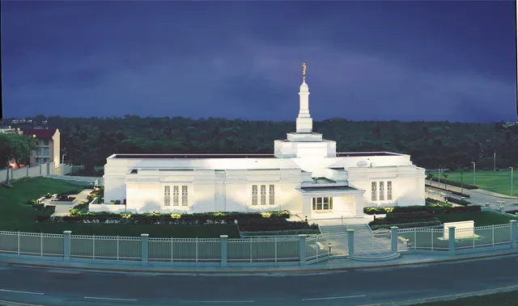

Temples
List
Mexico City Temple – Mexico
Puebla Temple – Mexico
Monterrey Temple – Mexico

Veracruz Temple – Mexico
Tijuana Temple – Mexico
Ciudad Juarez Temple – Mexico
Villahermosa Temple – Mexico
Guadalajara Temple – Mexico
Hermosillo Temple – Mexico